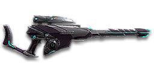

Sage Guide · Vanu Sovereignty · Infiltrator
The Vanu starter bolt-action — yours from the start, and the rifle that teaches you sniping. This page first shows you what one well-aimed shot can do, then teaches you the rhythm: stop, scope, breathe, fire.
The one-line verdict: the rifle that teaches you sniping: a one-shot headshot to about 246 m, a 1.2-second rechamber that punishes every miss, and nothing to hide behind. Learn the rhythm here and every other bolt-action feels familiar.

The XM98 · Vanu Sovereignty · 5-round magazine · auto-granted
Picture the scene, because you've probably lived it: you're sprinting across open ground, an enemy appears far away, and you do everything at once — raise the scope while you're still moving and fire the instant the picture arrives. The sight looks precise… and the bullet misses by a mile. You stay scoped through the 1.4 s rechamber, staring at empty ground, while he turns and kills you. It feels like the game cheated. It didn't — here's what actually happened.
You scoped in while moving — and fired before anything settled. Sprinting is the least accurate state in the game: your cone of fire starts at 7.0° — fully bloomed, the widest it can ever be. Raising the sight does not reset that cone, and on a 6x scope the sway drags your crosshair around on top of it. Raising a 6x scope alone takes ~0.3 s — you fired before the sight had even finished coming up.
Then you stayed scoped through the rechamber. After a bolt-action shot you must work the bolt — 1.4 s before the next round is ready — and you cannot aim while it happens unless you own the Supercooled Coil. Sitting scoped, tunnel-visioned, for over a second after a miss is how snipers die: you watched the wrong patch of ground while the enemy moved.
Two timers stack the deck further: your gun needs about 0.3 s to settle after a sprint, and the sight itself takes ~0.3 s to rise. Firing through all of it means your first shot — the only one that matters on a bolt-action — is pure guesswork.
1 · Feet. Let go of sprint (and the trigger, if you're already holding it). Stop, crouch, or drop into a strafe — anything but a full sprint. Planted feet are the whole foundation: your aimed cone is 0° only when you are still.
2 · Sight. Press ADS and let the scope come up (~0.3 s on a 6x scope). A heartbeat behind cover costs nothing — a rushed shot costs the kill.
3 · Breath. Hold Shift (Hold Breath) as the sight settles. Sway on 6x and higher scopes nearly vanishes while you hold it — this is the single biggest accuracy upgrade a sniper owns, and it's free. Release it while you rechamber to stretch each breath across several shots.
4 · Trigger — once. Now fire, one aimed shot, at the head. Then immediately work the bolt, break line of sight, and re-acquire. Stop → scope → breathe → fire. If you take one habit from this entire page, take this one. You'll practise exactly this rhythm in the simulator in section 04.
Four beats, left to right — the same mistake the cards above describe, drawn out.
1 · SprintingYour cone starts maxed at 7.0° — the widest it can ever be.
2 · Trigger heldFiring from the hip while running — every shot adds bloom.
3 · ADS, mid-holdThe sight looks precise — but aiming down sights does not reset bloom.
4 · The sprayBullets fly out of the wide cone you built. The enemy walks away.
Same fight, done right. Each beat has a job, and the order is the whole lesson.
1 · StopLet go of sprint (and the trigger). About 0.3 s for the gun to settle.
2 · AimPress ADS and let the sight come up (~0.15 s).
3 · FireNow fire — from the aimed cone. First shots land where the dot points.
The exception — under ~8 m, skip the whole danceHipfire works, no ADS needed, and stopping is optional. Keep moving, strafe, and let the hipfire ring do the work.
Every enemy infantry has 1,000 health (500 shield + 500 health). Your bullet does 650 damage up close, fading to 400 at long range — and with a 2.1× headshot multiplier, one headshot kills out to 246 m. Headshots are the whole gun; body shots are the backup plan. Leg shots count less (×0.9) but never change the shot count on this rifle except where the table shows it. That gives you the numbers worth memorising:
| Range | Damage | Head | Chest | Legs | Chest vs Nanoweave |
|---|---|---|---|---|---|
| Close · 0–10 m | 650 | 1 | 2 | 2 | 2 |
| Mid · 11–246 m | 649→476 | 1 | 2–3 | 2–3 | 2–3 |
| Far · 247–350 m | 476→400 | 2 | 3 | 3 | 3–4 |
Perfect-accuracy times: one headshot kills instantly at any range inside 246 m. Two chest shots take 1.4 s (the rechamber between them); three chest shots take 2.79 s. Body shots against a Nanoweave wearer lose 20% — headshots are unaffected, which is one more reason the head is the target.
Nanoweave: rank 1 of the Nanoweave Armor suit slot cuts sniper-rifle bodyshot damage by 20%; headshots are not reduced. A Nanoweave rebalance rumoured for 2026-11-08 could not be verified in public patch notes — the numbers here use the published 20% figure. Sniper rifles also use their own Sniper Rifles resistance type, which is what makes that bodyshot reduction apply to them.
Full power to 10 m, then a slide to 400 at 350 m — and it never goes lower. The gold dashed line shows the Suppressor: damage starts falling 20 m sooner and bullets fly 15% slower.
One gun, four fighting styles. The right technique changes with distance — use the range finder below to see what your bullets do at any range, then learn the four bands underneath it.
How to fight hereDrag the slider to a distance and the advice changes.
Best-case kill: one headshot inside the one-shot range. The 2nd-shot time is your rechamber — the price of every miss.
Aim: centre of the chest, from the hip. Keep moving.
Inside 25 m you're in SMG and shotgun country. Your hipfire cone is 5° standing — about 0.7 m wide at 8 m — so hipfire works at arm's length, but a scoped bolt-action at this range is a liability. If they close in, unscope, hipfire, or draw your sidearm.
Aim: the head. One shot, then rechamber.
Your full 650 damage lives here and the headshot one-shots to 246 m. Bullet drop is negligible — sniper rifles are zeroed at 150 m — so aim straight at the head. Hold your breath, fire once, and break line of sight while you rechamber.
Aim: the head. Lead runners slightly — 550 m/s is fast, not instant.
This is the XM98's job: one-shot heads, sway tamed by holding Shift, and a 1.2 s rechamber that feels short when the shot lands. Reposition after every one or two shots — an unsuppressed sniper reveals you on the minimap out to 100 m.
Aim: the head, holding over for drop. Only still targets.
Past 246 m the headshot stops one-shotting, your bullets drop (gravity 7.5 — Vanu bolt-actions get no free pass), and 6x sway is at its worst. Two headshots still kill, but at 1.4 s apart. Only take still targets out here — or close the distance first.
Your accuracy is decided by three things before skill even enters it: what your body is doing (your stance sets the starting cone of fire), what the scope is doing (sway drags your crosshair on a 6x scope), and what your finger is doing (one shot, then a rechamber you cannot rush). A bolt-action has no fire-mode switch and no burst to manage — its whole discipline is the rhythm below.
| Stance | Starting cone | What it means for you |
|---|---|---|
| Sprinting | 7.0° | Maxed out — the widest the cone can be. This is the first-lesson disaster: never start firing from a sprint. |
| Hipfire, moving | 6.00° | Walking or strafing from the hip. The ring at 8 m is about 0.84 m wide — see section 05. |
| Hipfire, standing | 5.00° | Your point-blank default. The 0.70 m ring at 8 m in section 05 is this stance drawn out. |
| Hipfire, crouched | 4.50° | The tightest hipfire you have. Crouch when holding a doorway from the hip. |
| Aimed (ADS), feet planted | 0° | Standing or crouched makes no difference here — a pinpoint first shot. This is why the first lesson's order matters. |
| Aimed (ADS), strafing | 0.55° | Still tight, but you move at half speed (0.5×) and the cone is no longer zero. Strafe between shots to stay hard to hit; plant your feet during each shot. |
| Discipline | How it works | Use it at |
|---|---|---|
| The one shot | Fire once, from a 0° cone | Your whole kill is a single trigger pull. Plant your feet, hold your breath, put the crosshair on the head, fire once. There is no burst to save you — the first shot is the fight. |
| Rechamber | Work the bolt — 1.4 s before the next round is ready | Chamber time 1.23 s plus 170 ms refire. You cannot aim during the rechamber unless you own the Supercooled Coil — so break line of sight, cloak, or at least strafe while the bolt cycles. |
| Hold breath | Shift — nearly kills scope sway | Sway on 6x and higher scopes drags your crosshair around. Holding Shift (Hold Breath) almost completely suppresses it. Release it while you rechamber to stretch each breath across several shots. The Target Focus implant lengthens hold-breath time. |
| Re-acquire | Re-aim before the next shot — never fire blind | After the rechamber, re-acquire the target from scratch: feet, sight, breath, fire. Firing the instant the bolt closes, before you've re-aimed, is how the second shot misses too. |
Supercooled Coil — rechamber while scoped. The Coil lets you stay scoped through the rechamber, which skips the ~0.3 s scope-in after every shot — a real fire-rate gain — but it also teaches tunnel vision: you watch one patch of ground while the enemy moves. Use it, but still break line of sight between kills.
A target 100 m away, aiming down sights through your 6x scope. The gold ring is your crosshair — watch it drift with the sway. Hold Shift (or hold the breath button) to steady it, then click Take the shot. The shot lands where the ring is, not where you wish it was. After the shot, the gun rechambers for 1.4 s — use that time to re-acquire. The discipline is: one aimed shot, rechamber, re-acquire. This practice window is shared by the whole Sage series: it's driven by a weapon profile plugged into the window — here the XM98's (1.4 s between shots, 0° starting cone, sway on a 6x scope) — and the shot is drawn at true scale from those numbers.
Rechamber — fills as the bolt cycles, empty when the next round is ready.
Hold your breath to steady the ring, then take the shot when it sits on the target.
Some things are easier to show than to say. Here's what your bullets actually do: how wide hipfire spreads at 8 metres, what the right shot rhythm looks like, and what the scopes really change. The hands-on version — taking the shot yourself — is the practice window in section 04.
A full-size target 8 m away — an arm's-length room fight. The rings show where hipfire rounds land around your aim point (the chest). Sizes are drawn to scale from the gun's real cone-of-fire numbers.
Read it this way: standing still, the 0.70 m ring is already wider than the chest — hipfire on a sniper rifle is a last resort, not a plan. Move and it grows to 0.84 m — wider than the whole torso at 8 m — and the rings only grow with distance while the man doesn't. The moving ring is half a metre wide by about 5 m: past that, most hipfire rounds leak past him, and the answer is to aim down sights, where the spread shrinks to a dot. Sniper rifles take no Laser Sight, so there is no attachment that tightens these rings. (Ring sizes use the real geometry: spread diameter = 2 × distance × tan(cone ÷ 2).)
The same three seconds, two very different outcomes. A bolt-action gives you one aimed shot and then makes you wait — what you do with the wait decides the fight:
The target pattern is one aimed shot, then a rechamber, then a fresh re-acquire. Staying scoped through the rechamber feels productive — you are watching the target — but you are watching the wrong patch of ground while he moves, and on a 6x scope the sway is dragging your crosshair the whole time. Break line of sight, let the bolt cycle, come back up fresh: feet, sight, breath, fire. With 5 rounds in the magazine, that rhythm is two or three kills if every shot lands — and with a 1.4 s gap between shots, a missed first shot is a lost duel.
The target at 150 m fills the scope like a man at 25 m — headshots are placeable, and the view is still wide enough to track a runner. This is the default scope, and for most fights it is the right one.
Same target, same 150 m — but his head fills the scope, so placing the shot is easy. The price: your view narrows to a tunnel, close targets feel enormous, and the sway is magnified with the picture. Hold Shift to kill the sway — on a 12x scope it is magnified twice as much as on the 6x. Only for still targets past 200 m.
That's the whole 30-cert decision from section 06 in one picture: 6x for everything, 12x for still targets at extreme range. Most veterans live on the 6x and only mount the 12x for a specific long lane.
Unlike a starter rifle, the XM98 comes with a scope but little else: no grip, no barrel attachment — everything below is a purchase. That also means every cert you spend is a real choice. Buy in the order shown and stop whenever the gun feels right.
The standard 6x sniper scope, fitted from the start — a round sight picture with a crosshair and mild sway.
Good: everything from 50 m to the edge of your one-shot range. This is the default for a reason.
Bad: nothing much — it is the all-rounder. The 12x only beats it on still targets past 200 m.
A step up from the 6x: slightly more magnification, same round sight picture.
Good: lanes at 100–200 m where the 6x leaves the head a little small.
Bad: close fights — the extra zoom narrows your view for no gain.
8x magnification for genuinely long shots, with a fine crosshair.
Good: holding a long lane at 150–300 m, where the target is small and still.
Bad: anything under 100 m, and moving targets — the sway is magnified with the picture.
10x magnification. The head fills the scope; so does the sway.
Good: still targets past 200 m, from a solid position with time to hold your breath.
Bad: most fights — the tunnel vision costs you awareness, and the sway needs Shift held constantly.
The longest scope in the game. The head is a barn door; the sway is twice what the 6x shows.
Good: extreme-range still targets, past 250 m, where nothing else lets you place a headshot at all.
Bad: anything that moves, anything under 200 m, and any fight where you need to see more than one doorway.
You vanish from the minimap when firing and your shots are quiet. In exchange, damage starts dropping off 20 m sooner and bullets fly 15% slower (550 → 468 m/s) — harder to lead moving targets, and about 20 m less one-shot headshot range.
Good: flanking behind enemy lines, rooftop and tree work, solo play behind the front — anywhere the minimap is the enemy.
Bad: front-line fighting where everyone already knows where you are — you pay the damage cost for stealth you don't need.
The honest default. A sniper rifle's barrel slot is a trade-off, not an upgrade — and on a bolt-action, the Suppressor's damage cost is the whole argument.
Good: your first weeks, and most fights after them. Spend certs on your scope and rail first.
Bad: nothing — there's no downside to an empty slot.
The Vanu straight-pull bolt: rechamber while staying scoped, so you skip the scope-in after every shot. The single biggest fire-rate upgrade a bolt-action owns.
Good: every bolt-action fight — it turns the rechamber from a full reset into a pause.
Bad: tunnel vision: staying scoped through the rechamber means watching one patch of ground while the enemy moves. Break line of sight between kills anyway.
Trims side-to-side recoil by 25%. On a sniper rifle the kick is mostly vertical, so the benefit is small — but it is real, and it costs nothing else.
Good: aimed, mid-to-long-range play, where every bit of steadiness helps the second shot land.
Bad: as a first purchase — the scope matters far more than the grip.
A torch whose beam reveals cloaked infiltrators. Toggle it with the attachment key (X by default).
Good: hunting a stalker infiltrator camping your capture point — sweep corners with it.
Bad: as your everyday rail — it gives zero accuracy help, and the beam advertises your position.
There is no Extended Magazine for this gun — the rail slot is grip, coil, receiver or torch, that's the menu. There is no underbarrel slot either.
No Soft Point, no High Velocity, no special rounds: sniper rifles take no ammunition attachments at all. Your damage falloff is fixed — the range game is played with positioning and scope choice, not with ammo.
0 certs · Day one
What the purchase hands you. Honestly playable — the gun's one-shot headshot carries it — but the first certs below transform it.
30–130 certs · Recommended
The best value in this whole guide. One scope for everything, a bolt you can work without unscoping, and nothing wasted.
160 certs · Lane holder
Built to sit on a lane at 100–250 m and never stop shooting. Slow to move — plant yourself behind cover and own the sightline. Every miss costs you 1.4 s; make each shot count.
130 certs · Flanker
No minimap blip, quiet shots, and the same one-shot headshot. Weak in a fair fight — so don't take fair fights.
Headshots deal 2.1× damage: one kills out to 246 m, where the chest needs two. Don't aim at the head directly if the sway is fighting you — aim at the neck and let the breath-held sight settle onto the skull. It's the single biggest damage upgrade you own, and it's free.
Sway on a 6x scope drags your crosshair around constantly. Holding Shift (Hold Breath) almost completely suppresses it — and the Target Focus implant lengthens it. Release it while you rechamber to stretch each breath across several shots.
After every shot you are defenceless for 1.4 s while the bolt cycles, and an unsuppressed sniper reveals you on the minimap out to 100 m. Fire, break line of sight, reposition — never take the second shot from the same rock.
Reloading with even 1 bullet left takes 2.8 s; an empty gun takes 4 s — longer, an eternity mid-fight. Count roughly: after a kill, duck behind cover and reload early. Treat the last 2 rounds as your emergency reserve, not your working magazine.
Your damage, accuracy and velocity all shine at 100–250 m — and your one-shot headshot window runs to 246 m. Sprint between cover, use buildings and rocks as stepping stones, and arrive at your range before opening fire. The player who chooses the range usually wins the duel — make it you.
Every bolt-action kills standard infantry with a bodyshot plus a melee swing — and a bodyshot plus two sidearm rounds is faster than waiting for the rechamber. If they close inside 10 m, stop scoping: unscope, hipfire, or draw the pistol. The rifle is for distance; the pistol is for everything closer.
Every gun has a price. Here's where the XM98 pays — and the habit that covers each hole.
A 5.0° hipfire cone, a 0.3 s scope-in, and 1.4 s between shots: if an SMG or shotgun closes inside 10 m, you lose the duel before your second round is ready.
Play around it: don't let them close. Fight at your range, keep cover between you, and draw the sidearm the moment they get inside 10 m.
5 rounds is a small magazine, and at one shot per kill plus the odd miss, two enemies empties it. Caught reloading in the open, you are defenceless for 2.8 s (4 s on empty).
Play around it: reload early behind cover (habit 4) and make each shot count — one aimed shot beats three hopeful ones. There is no Extended Magazine for this gun, so the habit is the upgrade.
Sway drags your crosshair around constantly on 6x and higher scopes — and higher magnification magnifies the sway like recoil. Without holding your breath, the crosshair wanders off the head on its own.
Play around it: hold Shift for every shot that matters, and release it while you rechamber. The Target Focus implant lengthens hold-breath time.
Nanoweave rank 1 cuts sniper bodyshot damage by 20% — your two-chest-shot window shrinks from 214 m to 44 m, and past that every body-shot kill takes an extra round at 1.4 s a round. Headshots are unaffected.
Play around it: hunt the head. Against a Nanoweave wearer the body is a three-shot job; the head is still one.
Like all rifles, you move at half speed while aiming down sights (0.5×), and the gun takes 0.3 s to scope in. And every unsuppressed shot reveals you on the minimap out to 100 m.
Play around it: hipfire inside ~5 m instead of scoping, reposition after every kill, and never sit in one spot for a whole fight.
This guide is VS-only, but your enemies aren't. An NC Infiltrator starts with the NC14 Bolt Driver, a TR Infiltrator with the M77-B, and a Nanite Systems Operative — the robot soldier — is handed the SR-100 automatically. Same job, four different trade-offs — here's yours next to theirs, from the same data feed.
| Stat | XM98 VS · you | NC14 Bolt Driver NC | M77-B TR | SR-100 NSO · auto-granted |
|---|---|---|---|---|
| Action | Bolt-action | Bolt-action | Bolt-action | Semi-auto |
| Damage per bullet | 650 → 400 | 650 → 400 | 650 → 400 | 450 → 334 |
| One-shot headshot range | 246 m | 246 m | 246 m | never — 2 headshots |
| Body shots to kill · close / far | 2 / 3 | 2 / 3 | 2 / 3 | 3 / 3 |
| Time to 2nd shot | 1.40 s | 1.40 s | 1.40 s | 0.30 s |
| Bullet velocity | 550 m/s | 550 m/s | 550 m/s | 550 m/s |
| Magazine | 5 | 5 | 5 | 10 |
| Reload (rounds left) | 2.8 s | 2.8 s | 2.8 s | 2.2 s |
Your edge in one line: identical to the NC and TR starters in every number on this page — the three bolt-actions are the same gun with a different coat of paint — and a one-shot headshot the SR-100 can never match. Your price: if that first headshot misses, the SR-100 gets its second headshot in 0.30 s while you are still working the bolt.
Here's the real difference between the starters. The three bolt-actions are identical, so the race is you against the SR-100 — and it's a race you lose on paper, every time:
| After the first shot | XM98 · you | NC14 / M77-B | SR-100 |
|---|---|---|---|
| First headshot misses · time to 2nd aimed shot | 1.40 s | 1.40 ssame | 0.30 s78% faster |
| Two headshots to kill | — · one kills | — · one kills | 0.30 s |
| Body-shot kill, close 2 chest shots (you) vs 3 chest shots (SR-100) |
1.40 s | 1.40 ssame | 0.60 s57% faster |
| Body-shot kill, close, +200 ms reaction + ping before the first bullet |
1.60 s | 1.60 ssame | 0.80 s50% faster (was 57%) |
Percentages are worked from the rounded times — 1,395 ms for your second shot (1,225 ms chamber + 170 ms refire) against 300 ms for the SR-100's, and 1,395 ms against 600 ms for the body-shot kill — so they won't match exactly if you redo them from the rounded seconds. Read the pattern: the SR-100 is dramatically faster to the second shot, because it never rechambers. But it needs the second shot, and you don't.
Nobody fires the instant an enemy appears. A typical duel adds about 150 ms of human reaction plus about 50 ms of ping — 200 ms of overhead before the clock even starts. Both players pay it, so it shrinks every gap above — but the follow-up gap is so large that it barely matters.
The ± matters more than the headline. That 200 ms is an average, not a promise: reaction time easily swings 100–250 ms with surprise, fatigue and who saw who first, and ping varies by server and connection. But the gap here is 1.10 s — ten times the normal wobble in your own reaction — so no amount of fast reactions closes it. The SR-100's edge is real and permanent: if your first headshot misses, it gets a second headshot before your bolt has finished cycling. The counter is not speed, it's accuracy: your first headshot kills, and theirs doesn't.
Your mirror. Identical damage, identical one-shot headshot range (246 m), identical 1.40 s between shots, identical 5-round magazine and 2.8 s reload. There is no stat on this page where the two guns differ.
How you beat it: you don't out-gun it — you out-play it. The duel is pure skill: whoever lands the first headshot wins, and whoever misses rechambers for 1.40 s. Hold your breath, take the still shot, and reposition after every miss.
Your mirror, in red. Identical to the NC14 and to you in every number on this page — the three faction bolt-actions are the same gun with a different coat of paint.
How you beat it: exactly like the NC14. There is no weapon advantage to find here, so find a positional one: shoot from cover, from above, from a lane they aren't watching. The first headshot decides it.
The forgiving one. What every Nanite Systems Operative is handed on day one: a semi-auto sniper that needs two headshots (0.30 s apart) or three chest shots (0.60 s) — and a 10-round magazine that forgives a miss your 5-round gun doesn't.
How you beat it: you can't out-shoot it shot for shot, so don't trade misses. Your first headshot kills outright; theirs needs a second. Take the still shot, hold your breath, and make the first one count — then break line of sight before their second headshot arrives.
The duellist. A one-shot headshot to 246 m — the only instant kill on this page — with the same velocity and reload as the other bolt-actions.
Your discipline: your whole advantage is the first shot. Plant your feet, hold your breath, put the crosshair on the head, fire once. If it misses, you are a 1.40 s bystander while the SR-100 fires again — so never take a shot you haven't aimed.
Open the world map, travel to VR Training, and run these on the target dummies. Five minutes before a play session beats an hour of dying confused.
Aim at a wall 100 m away and fire one shot without touching the mouse. Watch where it lands — then work the bolt, re-acquire, and fire again. That's your gun's fingerprint: one shot, 1.4 s of rechamber, one fresh aim. Repeat until every shot lands where the dot was.
At 100–246 m — inside your one-shot window — kill dummies with one headshot each, holding Shift for every shot. If a shot misses, it was the sway or the rush: slow down, breathe, fire. Goal: five one-shot kills in a row.
Walk the dummy range keeping your crosshair at head height, stopping at each new piece of cover. One shot per position, then move — never two shots from the same rock. This is the sniper's real rhythm: shoot, move, shoot.
Fire one shot at a dummy, cloak, sprint 20 m to new cover, fire again. This is your survival skill — the one that keeps you alive after the minimap gives you away. Remember: an unsuppressed shot reveals you out to 100 m.
Fire exactly 4 rounds, step behind a pillar, reload, repeat. Train your hands to reload early and only in cover until it's automatic — with a 2.8-second reload (4 s on empty), in real fights you'll do it without thinking, which is the point.